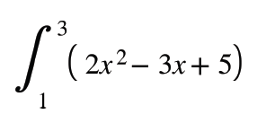
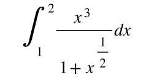
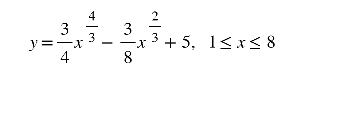

ESCOM
Inicio
EXAMEN 1
1.-Encuentre el área bajo la curva para la función f(x)=x
2
+6x+3 en el intervalo [-1,3] mediante Sumas de Riemman.
a. 136/3 u
2
b. 13/2 u
2
c. 32 u
2
d. 134 u
2
2.- Evalúe la siguiente integral definida usando la definición:

a. 28
b. 9/10
c. 12/5
d. 46/3
3.-Integre por el método del trapecio con n = 6:

a. 1.587
b. 1.654
c. 2.801
d. 1.217
4.-Determinar el valor del área encerrada por las curvas: f(x)= 3+2x-x
2
y g(x)=x
2
-4x+3.
a. 9 u
2
b. 18 u
2
c. 24/3 u
2
d. 8 u
2
5.-Hallar el volumen del sólido que resulta de girar, alrededor del eje x, la región limitada por la curva f(x) = x
1/2
y las rectas Y = 0 y X = 4.
a. 9π u
3
b. 14π u
3
c. 21π u
3
d. 8π u
3
6.-La base de un sólido es la región R limitada por la gráfica y
2
+x
2
=4 se toman secciones perpendiculares al eje x en forma de triángulo equilátero, halle el volumen del sólido.
a. 18.48 u
3
b. 15.17 u
3
c. 35 u
3
d. 13.67 u
3
7.-Calcular la longitud de arco de la función dada en el intervalo señalado:

a. 5/8
b. 100/3
c. 99/8
d. 21/4
8.-Determinar el área de superficie obtenida al girar la curva y = (1+4x)
1/2
en el intervalo 1 ≤ x ≤ 5 respecto al eje x
a. 5π
b. 2π/3
c. 98π/3
d. 15π
9.-Integre por el método del trapecio con n = 6:
a. 1.120
b. 2.843
c. 3.210
d. 12.251
10.-Calcular el área de la región comprendida entre y = x + 2, y = x en el intervalo [0,4].
a. 3/15 u
2
b. 7 u
2
c. 18 u
2
d. 8 u
2
Regresar.
Asegurate de contestar todas las preguntas.